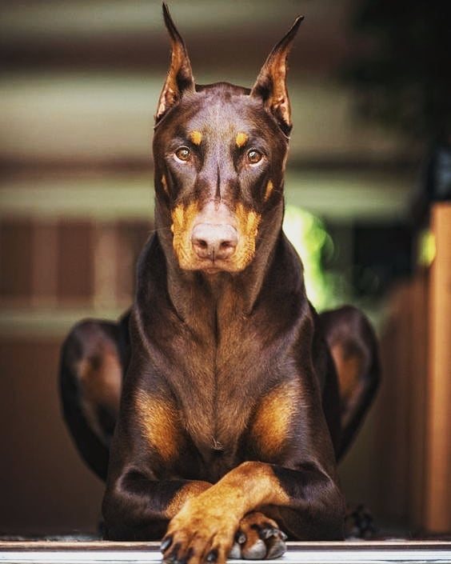

Походження
Добермани були виведені в Німеччині, на території Тюрінгії у другій половині 19 століття. Цікавий факт походження породи доберман: породу названо на честь її основоположника — Фрідріха Карла Л. Доберманна, який служив збирачем податків у місті Апольд. Для виконання своїх обов'язків Доберманну був потрібен надійний помічник, і він задумався про створення породи собак виключно для службових цілей. Для виведення нової породи заводчик схрещував німецького пінчера з ротвейлером, німецькою вівчаркою та манчестерським тер'єром. У крові доберманів також тече кров гончаків та догів.
Спочатку ця порода була відома як «тюрінгський пінчер» та «доберман-пінчер». На початку 20-го ст. були визнані її стандарти, а трохи пізніше, у середині 20-го ст., вона набула своєї сучасної назви.
Тривалість життя добермана – 10-13 років.
Особистість
Відповідно до затверджених у 2015 році стандартів, висота у собаки добермана в загривку повинна становити 68–72 см, у суки — 63–68 см. Допустима вага дорослого добермана собаки — 40–45 кг, суки — 33–35 кг.
Добермани міцні та одночасно граціозні собаки з пропорційною статурою та сухою конституцією. При цьому вони мають розвинену мускулатуру і широку кістку. Голова невелика, з довгою та вузькою мордою та нерозвиненим лобом. Очі невеликі, вуха високо поставлені. Шия у доберманів не дуже довга, висока холка. Ці собаки мають розвинену, глибоку та округлу грудну клітку, пряму, міцну спину та трохи опущений круп. Черевна стінка у доберманів має бути підтягнута. Передні кінцівки з широкою кісткою, міцні, розташовані під прямим кутом до тулуба, задні кінцівки мають розвинену мускулатуру та трохи відставлені. Нині хвіст та вуха доберманам не купірують.
Основна частина розсадників доберманів знаходиться у Москві, Московській області та Санкт-Петербурзі. Перш ніж купити цуценя, рекомендуємо проконсультуватися із заводчиком, уточнити інформацію про ціну та родовід вашого майбутнього вихованця.
Основне забарвлення у доберманів чорне або коричневе з коричнево-червоними підпалами. Шерсть коротка, жорстка, щільно прилягає до тіла, підшерстя не розвинене.
Здоров'я
В цілому добермани мають гарне здоров'я. Найчастіша патологія – дилатаційна кардіоміопатія та порушення серцевого ритму, нерідко зустрічається дисплазія ліктьових суглобів, остеопатії, коагулопатії, синдром Вобблера, гіпотиреоз, епілепсія.
Через високу рухливість добермани схильні до травм опорно-рухового апарату, різаних і колотих ран. У дорослих доберманів зустрічається заворот шлунка, онкологічні захворювання.
Важливо пам'ятати, що дотримання умов утримання добермана, а також профілактичні ветеринарні огляди з раннього віку заважають розвитку багатьох захворювань.
Грумінг
Доберманам потрібне просторе приміщення - їм важко перебувати у маленькій квартирі без тривалих активних прогулянок.
Для виховання слухняного добермана потрібна його соціалізація з раннього віку, постійне дресирування та високі фізичні навантаження.
У догляді добермани невибагливі: коротка шерсть цих собак не потребує частого миття. Необхідно вичісувати тварину раз на тиждень спеціальною щіткою та протирати вологим рушником. Для прогулянок у холодну пору року рекомендується використовувати комбінезон.
Важливою процедурою є щотижневий огляд і чистка вух, а також огляд зубів і порожнини рота вихованця.
Коротка шерсть доберманів вимагає частого миття. Для видалення відмерлого волосся собаку необхідно протирати тканиною або м'якою щіткою. Для прогулянок у холодну пору року потрібно використовувати комбінезон.